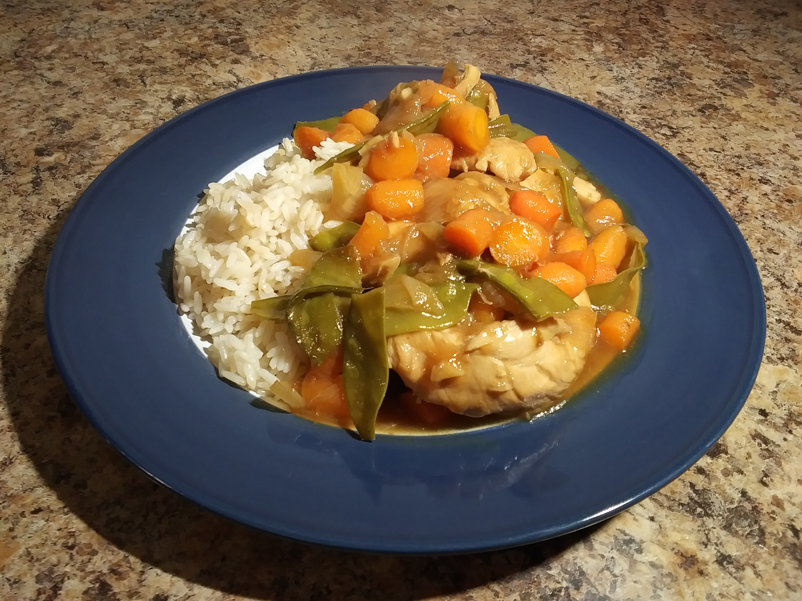

General Tso's Onion Stir-fry: A Collaboration between a Mediocre Chef and AI
This delicious recipe for General Tso's Onion Stir-fry was the result of a collaborative effort between a mediocre chef and artificial intelligence. The dish features succulent chicken breast pieces, caramelized onions, sautéed garlic, and a medley of colorful vegetables, all tossed in a sweet and tangy General Tso's sauce. The result is a flavorful and satisfying meal that's perfect for a quick and easy weeknight dinner.
So here's the story behind this recipe: I was rummaging through my fridge and found a bag of onions, some carrots, and a bottle of General Tso's sauce. I decided to collaborate with ChatGPT 3.0 to whip up a dinner recipe using these ingredients, and it turned out pretty darn good. I enjoyed it so much that I asked ChatGPT to help me create this webpage and share the recipe with all of you!

Ingredients:
- 1.5 lbs boneless, skinless chicken breast or thigh, sliced or diced ($8-$10)
- 1 large bag of small onions, halved ($2-$3)
- 2 large carrots, peeled and sliced ($1-$2)
- 1 lb green beans, trimmed ($2-$3)
- 12 oz jar of General Tso's sauce ($3-$4)
- 2 tbsp vegetable oil ($0.10-$0.20)
- 2 tbsp soy sauce ($0.10-$0.20)
- 2 tbsp rice vinegar ($0.10-$0.20)
- 2 tbsp brown sugar ($0.10-$0.20)
- 1 tbsp cornstarch ($0.10-$0.20)
- 1 tbsp minced ginger ($0.10-$0.20)
- 3 cloves garlic, minced ($0.10-$0.20)
- Salt, to taste ($0.05-$0.10)
Instructions:
- In a large pot or wok, heat the vegetable oil over medium-high heat.
- Once the oil is hot, add the onions and stir occasionally, cooking for 30-40 minutes or until caramelized and softened.
- While the onions are cooking, prepare the chicken by slicing or dicing it, and seasoning it with salt to taste.
- Once the onions are caramelized, add the chicken to the pot and stir well, cooking for 5-10 minutes until the chicken is browned.
- Add the sliced carrots and trimmed green beans to the pot and stir well.
- In a small skillet, heat a tablespoon of vegetable oil over medium heat. Add the minced garlic to the skillet and stir constantly for 1-2 minutes, or until the garlic becomes fragrant and lightly browned.
- Pour the jar of General Tso's sauce into the pot and stir well to coat all the ingredients.
- Add the minced ginger and sautéed garlic to the pot and stir to combine.
- In a small bowl, whisk together the soy sauce, rice vinegar, brown sugar, and cornstarch until smooth. Add the mixture to the pot and stir well to incorporate.
- Lower the heat to medium-low and let everything simmer for an additional 15-20 minutes or until the vegetables are tender and the chicken is cooked through.
- Taste the dish and adjust the seasoning as needed, adding salt to taste.
- Serve the General Tso's Onion and Chicken Stir-Fry with Vegetables hot with steamed rice, if desired.
Notes:
- With the addition of a jar of General Tso's sauce, you may not need to add additional vinegar, sugar, or cornstarch. However, you can always adjust the seasoning to your taste, adding more salt or soy sauce if needed.
- Remember to monitor the cooking time of the vegetables and adjust it accordingly, as they may cook faster or slower depending on their size and type.
- Sautéing the garlic will bring out its natural sweetness and nuttiness, and will help to distribute its flavor more evenly throughout the dish.
- The estimated costs are based on a general range of prices and may vary depending on your location and where you shop.